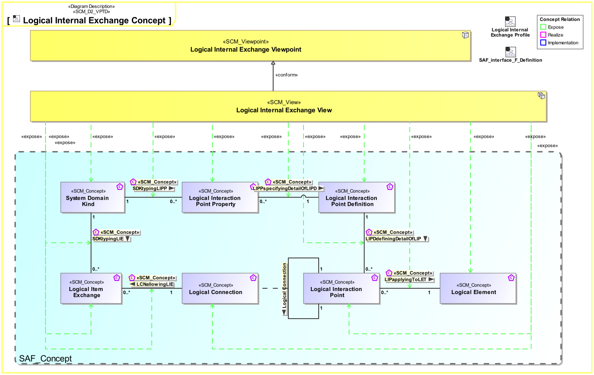
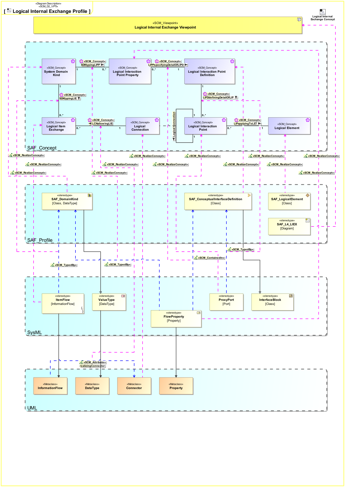

L4_LIEX Logical Internal Exchange Viewpoint
| Domain | Aspect | Maturity |
|---|---|---|
| Logical | Interaction & Collaboration |

The Logical Internal Exchange Viewpoint serves for the identification and definition of interfaces of elements of the logical system. also, the delegation of system element interfaces to the logical system boundary interfaces is covered. The Logical Internal Exchange Viewpoint
The Logical Internal Exchange Viewpoint supports the “System Architecture Definition Process” activities of the INCOSE SYSTEMS ENGINEERING HANDBOOK 2023 [§2.3.5.4] and contributes to the artifacts “System Architecture Description” and “System Interface Definition”.
One or more IBDs featuring the SOI boundary, the logical elements of the SOI, as well as the connectors for each identified SOI interface delegation to logical SOI elements. An interface is a connection resource for hooking on the logical SOI elements to other logical SOI elements. Item flows are defined for each exchange on the identified interface. Note: Please use more than one IBD focused on different areas of interest to keep the view comprehensive.
The following Stereotypes / Model Elements are used in the Viewpoint:
The Diagram shows the concepts exposed by the viewpoint, and related concepts if necessary.

| Concept | Documentation |
|---|---|
| SDKtypingLIE | Specifies the fact that a System Domain Kind defines the type of a Logical Item Exchange. |
| SDKtypingLIPP | Specifies the fact that a System Domain Kind defines the type of a Logical Interaction Point Property. |
| System Domain Kind | Specification for any kind of conceptual item (energy, material, information, etc.) to be exchanged on Functional or Logical Level. The System Domain Kind is agnostic to any realization on Physical Level. |
| LCNallowingLIE | Specifies the fact that a Logical Item Exchange is allowed on the Logical Connection. |
| LIPapplyingToLET | Specifies the fact that a Logical Interaction Point applies to a Logical Element. |
| LIPDdefiningDetailOfLIP | Specifies the fact that a Logical Interaction Point Definition defines the exchange capabilities of a Logical Interaction Point. |
| LIPPspecifyingDetailOfLIPD | Specifies the fact that a Logical Interaction Point Property is a detail of a Logical Interaction Point Definition. |
| Logical Connection | Specifies the connection of two interaction points on Logical Level. Note: Connections between logical components indicate that item flows are passed from one output of a source component to one or more inputs of target components. |
| Logical Interaction Point Definition | Specifies the exchange capabilities of an interaction point on Logical Level. |
| Logical Interaction Point Property | Specifies a detail of an interaction point on Logical Level. |
| Logical Interaction Point | Specifies the existence of an interaction point on Logical Level. |
| Logical Item Exchange | Specifies the exchange that is to take place on a connection of two interaction points on Logical Level. |
| Logical Element | Describes a conceptual Logical Element as specification for an implementation of a system, or system element. |
The Diagram shows the implementation of exposed concepts.
